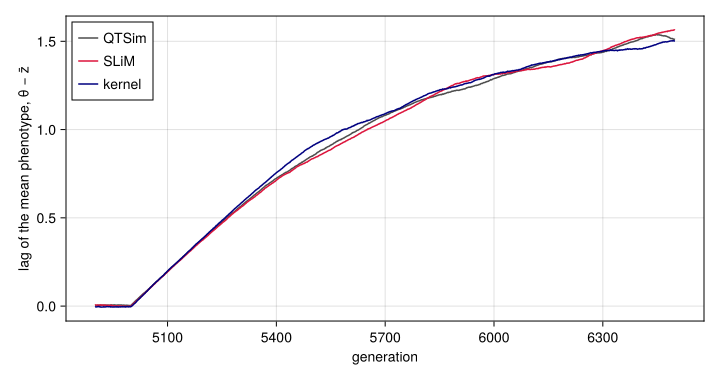

One life cycle, two backends
Simon Frost
- Overview
- Setup
- The life cycle as a morphism
- Two functors
- A SLiM model from the life cycle
- The generated model is the hand-written port
- The generated model agrees with QTSim
- A new step, lowered twice
- Many loci
- Demes and migration
- Summary
Overview
The previous vignettes build a generation by composing the kernel’s operators directly. Here the life cycle is written once, as syntax: a morphism of a free symmetric monoidal category whose objects are the stages of a generation and whose generating morphisms are the steps between them. A functor out of a free category is fixed by where it sends the generators, so giving each step a meaning in a backend gives every life cycle built from those steps a meaning there. Two such functors lower the life cycle: one to the simulation kernel and one to Eidos, the scripting language of the population-genetics simulator SLiM (Haller and Messer 2023).
The SLiM model lowered from QTSim’s life cycle is, run for run, the SLiM port of QTSim that was written by hand for this project, and it agrees with QTSim in distribution, with one locus or a hundred. A new step, given a meaning in both backends, yields two simulators of a model QTSim does not have, which can be checked against each other: a fluctuating optimum, and demes coupled by migration, which the monoidal product ⊗ places side by side.
The vignette needs SLiM (version 4 or later), the hand-written port and QTSim. It looks for SLiM in slim/build/slim in the folder that holds the package’s folder (the SLIM environment variable, or a slim on the path, can stand in for it), takes the port from the package’s validate/slim/qtsim.slim, and looks for QTSim built from the source that comes with the package (make -C reference/QTSim) or in the paper’s code.
Setup
using QTLSim
import Catlab # loads QTLSim's categorical layer
using Catlab: ⋅, ⊗, dom, codom, Hom
using CairoMakie, HypothesisTests, Printf, Random, Statistics
CairoMakie.activate!(type = "png")
const ROOT = normpath(joinpath(@__DIR__, "..", "..", ".."))
const SLIM = let built = joinpath(ROOT, "slim", "build", "slim")
haskey(ENV, "SLIM") ? ENV["SLIM"] : isfile(built) ? built : something(Sys.which("slim"), built)
end
const PORT = joinpath(@__DIR__, "..", "..", "validate", "slim", "qtsim.slim")
include(joinpath(@__DIR__, "..", "..", "validate", "qtsim.jl")) # find_qtsim(): see reference/QTSim/README.md
const QTSIM = something(find_qtsim(), "")
all(isfile, (SLIM, PORT, QTSIM)) || error("this vignette needs SLiM, the SLiM port and QTSim")
Threads.nthreads()6The life cycle as a morphism
lifecycle() returns the syntax: the Catlab presentation of a free symmetric monoidal category with four objects, the stages of a generation, and seven generating morphisms, the steps of QTSim’s generation loop.
L = lifecycle()
const STEP_NAMES = (:develop, :select, :reproduce, :record, :rescale, :mutate, :swap)
println("| step | from | to |\n|:--|:--|:--|")
for s in STEP_NAMES
f = getfield(L, s)
println("| `", s, "` | ", dom(f), " | ", codom(f), " |")
end| step | from | to |
|---|---|---|
develop | Zygotes | Adults |
select | Adults | Survivors |
reproduce | Survivors | Offspring |
record | Offspring | Offspring |
rescale | Offspring | Offspring |
mutate | Offspring | Offspring |
swap | Offspring | Zygotes |
Steps compose with Catlab’s ⋅ when the stage one step ends in is the stage the next begins with. QTSim’s generation is the composite of all seven, in the order of its loop, and is a morphism from zygotes to zygotes:
(; develop, select, reproduce, record, rescale, mutate, swap) = L
qtsim = develop ⋅ select ⋅ reproduce ⋅ record ⋅ rescale ⋅ mutate ⋅ swapdevelop⋅select⋅reproduce⋅record⋅rescale⋅mutate⋅swap: Zygotes → ZygotesSteps whose stages do not match do not compose. Selecting before developing is not a life cycle, and Catlab says so:
try
select ⋅ develop
catch e
println(first(sprint(showerror, e), 120), "…")
endDomain error in term constructor compose(select,develop)…Two functors
lower(f, :kernel) sends each step to the kernel function it wraps (develop!, select!, reproduce!, recording, the scheduled change of the fitness width, mutate!, and the swap of the parent and offspring buffers), and composition to ⋅. The image of the generation is an operator on a World:
lower(qtsim, :kernel)Operator(:develop⋅select⋅reproduce⋅record⋅rescale⋅mutate⋅swap)Run once per generation by run_composed, it is run!, bit for bit, here for one locus, with the optimum moving from generation 5000 and the fitness function narrowing:
p = Params(PopSize = 1000, NoQTL = 1, Ploidy = 2, NoGenerations = 6500, PhenotypeVar = 0.02,
Heritability = 0.5, MutationScalar = 0.001, MutationRatePerGamete = 0.0002,
MoveFitnessSDGen = 5000, MoveFitnessSD = 1.0, MoveType = :phenotype,
ChangeFitnessGen = 5000, ChangeFitnessSD = 0.3)
a = run!(World(p), Xoshiro(1))
b = run_composed(World(p), Xoshiro(1); cycle = qtsim)
all(getfield(a, k) == getfield(b, k) for k in keys(a))truelower(f, :eidos) sends each step to a fragment of Eidos. Each individual carries its two allele values, as in QTSim’s continuum-of-alleles model, and SLiM supplies only the life cycle of a non-Wright–Fisher model. Selection, for example:
lower(select, :eidos) // select: move the optimum, Gaussian fitness with QTSim's 0.4, viability [Adults → Survivors]
THETA = @POP@.getValue("THETA");
OMEGA = @POP@.getValue("OMEGA");
if (moveGen >= 0 & gen >= moveGen) {
if (moveType == "phenotype") THETA = mean(pheno) + sqrt(VP) * moveSD;
else if (moveType == "fitness") THETA = mean(pheno) + OMEGA * moveSD;
else THETA = THETA + moveSD;
@POP@.setValue("THETA", THETA);
}
x = standardise ? (pheno - THETA) / sd(pheno) else pheno - THETA;
W = drift ? rep(1.0, size(adults)) else dnorm(x, 0.0, OMEGA) / (0.4 / OMEGA);
survived = runif(size(adults)) < W;
sidx = which(survived);
ns = size(sidx);
if (ns < 2) { @POP@.setValue("extinct", T); adults.fitnessScaling = 0.0; break; }Composition goes to concatenation, so the image of the generation is the seven fragments in order:
lower(qtsim, :eidos).code == join(lower(getfield(L, s), :eidos).code for s in STEP_NAMES)trueA SLiM model from the life cycle
slim_script puts the image of a life cycle inside a complete SLiM model, in a reproduction() callback that runs once per tick, with the parameters of a Params as defaults that slim -d can override:
script = slim_script(qtsim, p)
print(script)// QTSim as a nonWF SLiM model, generated by QTLSim.jl from the life cycle
//
// develop⋅select⋅reproduce⋅record⋅rescale⋅mutate⋅swap: Zygotes → Zygotes
//
// by the lowering to Eidos: each step of the life cycle is a fragment of the
// reproduction() callback below, in the order of the composite, for each of its
// 1 deme. Regenerate it with QTLSim's `slim_script` rather than editing it.
//
// Parameters can be overridden with slim -d "NAME=value" and the seed set with -s.
initialize() {
initializeSLiMModelType("nonWF");
if (!exists("N")) defineConstant("N", 1000);
if (!exists("VP")) defineConstant("VP", 0.02);
if (!exists("h2")) defineConstant("h2", 0.5);
if (!exists("m")) defineConstant("m", 0.001);
if (!exists("rate")) defineConstant("rate", 0.0002);
if (!exists("L")) defineConstant("L", 1);
if (!exists("RECOMB")) defineConstant("RECOMB", 1.0);
if (!exists("NGEN")) defineConstant("NGEN", 6500);
if (!exists("sampleEvery")) defineConstant("sampleEvery", 1);
if (!exists("moveGen")) defineConstant("moveGen", 5000);
if (!exists("moveSD")) defineConstant("moveSD", 1.0);
if (!exists("moveType")) defineConstant("moveType", "phenotype");
if (!exists("changeGen")) defineConstant("changeGen", 5000);
if (!exists("changeSD")) defineConstant("changeSD", 0.3);
if (!exists("initOmega")) defineConstant("initOmega", -1.0);
if (!exists("drift")) defineConstant("drift", F);
if (!exists("standardise")) defineConstant("standardise", F);
if (!exists("migRate")) defineConstant("migRate", 0.0);
defineConstant("DEMES", 1); // fixed by the life cycle
defineConstant("VG", h2 * VP);
defineConstant("VE", VP - VG);
defineConstant("ESD", sqrt(VE));
defineConstant("MUTVAR", (m / (2 * L * rate)) * VE); // m/(Ploidy·NoQTL·rate)·V_E
defineConstant("OMEGA0", initOmega < 0 ? VG / sqrt(m * VE) else initOmega);
// vestigial genetics: SLiM supplies only the life cycle
initializeMutationRate(0.0);
initializeMutationType("m1", 0.5, "f", 0.0);
initializeGenomicElementType("g1", m1, 1.0);
initializeGenomicElement(g1, 0, 0);
initializeRecombinationRate(0.0);
}
1 first() {
for (i in seqLen(DEMES)) {
pop = sim.addSubpop(i + 1, N);
pop.individuals.setValue("a0", rep(0.0, L)); // founders: allele values 0
pop.individuals.setValue("a1", rep(0.0, L));
pop.setValue("THETA", 0.0);
pop.setValue("OMEGA", OMEGA0);
pop.setValue("extinct", F);
}
}
// one generation per tick, done in the first call of the callback
reproduction() {
gen = sim.cycle - 1; // QTSim's generation index
if (gen == 0) catn("gen\tphenoMean\tgenoVar\tnSurv\ttheta\tomega" + ((DEMES > 1) ? "\tdeme" else ""));
kids_p1 = p1.individuals[integer(0)];
do { // deme p1
if (p1.getValue("extinct")) break;
// develop: genotype the sum of allele values, phenotype genotype + e with e ~ N(0, V_E) [Zygotes → Adults]
adults = p1.individuals;
a0 = adults.getValue("a0");
a1 = adults.getValue("a1");
genotype = (L == 1) ? a0 + a1 else colSums(matrix(a0, nrow = L)) + colSums(matrix(a1, nrow = L));
env = rnorm(size(adults), 0.0, ESD);
pheno = genotype + env;
// select: move the optimum, Gaussian fitness with QTSim's 0.4, viability [Adults → Survivors]
THETA = p1.getValue("THETA");
OMEGA = p1.getValue("OMEGA");
if (moveGen >= 0 & gen >= moveGen) {
if (moveType == "phenotype") THETA = mean(pheno) + sqrt(VP) * moveSD;
else if (moveType == "fitness") THETA = mean(pheno) + OMEGA * moveSD;
else THETA = THETA + moveSD;
p1.setValue("THETA", THETA);
}
x = standardise ? (pheno - THETA) / sd(pheno) else pheno - THETA;
W = drift ? rep(1.0, size(adults)) else dnorm(x, 0.0, OMEGA) / (0.4 / OMEGA);
survived = runif(size(adults)) < W;
sidx = which(survived);
ns = size(sidx);
if (ns < 2) { p1.setValue("extinct", T); adults.fitnessScaling = 0.0; break; }
// reproduce: N offspring of two distinct survivors; each gamete copies a parental
// chromosome, switching strands at most once, as QTSim does [Survivors → Offspring]
i1 = rdunif(N, 0, ns - 1);
i2 = rdunif(N, 0, ns - 1);
dup = which(i1 == i2);
while (size(dup) > 0) { i2[dup] = rdunif(size(dup), 0, ns - 1); dup = which(i1 == i2); }
if (L == 1) {
sa0 = a0[sidx]; sa1 = a1[sidx];
c0 = ifelse(runif(N) < 0.5, sa1[i1], sa0[i1]);
c1 = ifelse(runif(N) < 0.5, sa1[i2], sa0[i2]);
} else {
par = c(sidx[i1], sidx[i2]); // the parent of each of the 2N gametes
npts = rpois(2 * N, RECOMB); // crossover points drawn for each gamete
first = runif(2 * N) < 0.5; // T: the gamete starts on the parent's a0
cut = rep(L - 1, 2 * N); // the last locus taken from the starting strand
for (j in which(npts > 0 & npts < L)) cut[j] = min(sample(0:(L - 2), npts[j]));
loc = rep(0:(L - 1), 2 * N);
at = repEach(par * L, L) + loc;
g = ifelse((loc <= repEach(cut, L)) == repEach(first, L), a0[at], a1[at]);
c0 = g[0:(N * L - 1)];
c1 = g[(N * L):(2 * N * L - 1)];
}
// record: the parent generation's statistics, every `sampleEvery` generations [Offspring → Offspring]
if (gen % sampleEvery == 0)
catn(gen + "\t" + mean(pheno) + "\t" + var(genotype) + "\t" + ns + "\t" + p1.getValue("THETA") + "\t" + p1.getValue("OMEGA") + ((DEMES > 1) ? "\t" + p1.id else ""));
// rescale: the scheduled change of the fitness width, from the next generation [Offspring → Offspring]
if (gen == changeGen) p1.setValue("OMEGA", changeSD);
// mutate: Poisson(L·rate) mutations per offspring chromosome, each adding N(0, MUTVAR)
// to a random locus [Offspring → Offspring]
k0 = rpois(N, L * rate);
k1 = rpois(N, L * rate);
if (L == 1) {
c0 = c0 + rnorm(N, 0.0, sqrt(k0 * MUTVAR));
c1 = c1 + rnorm(N, 0.0, sqrt(k1 * MUTVAR));
} else {
at = repEach(0:(N - 1), k0) * L + rdunif(sum(k0), 0, L - 1);
eff = rnorm(sum(k0), 0.0, sqrt(MUTVAR));
for (j in seqAlong(at)) c0[at[j]] = c0[at[j]] + eff[j];
at = repEach(0:(N - 1), k1) * L + rdunif(sum(k1), 0, L - 1);
eff = rnorm(sum(k1), 0.0, sqrt(MUTVAR));
for (j in seqAlong(at)) c1[at[j]] = c1[at[j]] + eff[j];
}
// swap: the offspring replace their parents [Offspring → Zygotes]
kids_p1 = p1.addEmpty(count = N);
for (k in seqLen(N)) {
kids_p1[k].setValue("a0", c0[(k * L):(k * L + L - 1)]);
kids_p1[k].setValue("a1", c1[(k * L):(k * L + L - 1)]);
}
adults.fitnessScaling = 0.0;
} while (F);
dead = 0;
for (pop in sim.subpopulations) dead = dead + asInteger(pop.getValue("extinct"));
if (dead == DEMES) { catn("Pop all died."); sim.simulationFinished(); }
else if (gen >= NGEN - 1) sim.simulationFinished();
self.active = 0;
}
1000000 late() { sim.simulationFinished(); } // backstoprun_slim runs a SLiM model and reads the table it prints, which has the columns QTSim’s output has.
function run_slim(model, seed; defines = Dict{String,Any}())
args = ["-s", string(seed)]
for (k, v) in defines
push!(args, "-d", v isa AbstractString ? "$k=\"$v\"" : "$k=$v")
end
path = tempname() * ".slim"; write(path, model)
text = try read(`$SLIM $args $path`, String) finally rm(path; force = true) end
rows = [split(l, '\t') for l in split(text, '\n') if occursin(r"^\d+\t", l)]
(; gen = [parse(Int, r[1]) for r in rows], pheno_mean = [parse(Float64, r[2]) for r in rows],
geno_var = [parse(Float64, r[3]) for r in rows], nsurv = [parse(Int, r[4]) for r in rows],
theta = [parse(Float64, r[5]) for r in rows], extinct = occursin("Pop all died.", text),
lines = [join(r, '\t') for r in rows])
end
nothingThe generated model is the hand-written port
The package also has a SLiM port of QTSim written by hand, validate/slim/qtsim.slim, validated against QTSim before the life cycle existed. Run with the same seed and parameters, the generated model and the port print the same table, number for number, because their steps are the same Eidos statements in the same order and so draw the same random numbers. The one difference is intended: when a population dies, the port also prints the generation in which it died, and QTSim does not.
port = read(PORT, String)
checks = (
("stabilising selection", Dict{String,Any}("N" => 1000, "VP" => 0.02, "h2" => 0.5, "m" => 0.02,
"rate" => 0.5, "NGEN" => 600, "moveGen" => -1, "changeGen" => -1, "changeSD" => -1.0, "initOmega" => 0.3)),
("moving optimum", Dict{String,Any}("N" => 1000, "VP" => 0.02, "h2" => 0.5, "m" => 0.001,
"rate" => 0.0002, "NGEN" => 600, "moveGen" => 300, "moveSD" => 1.0, "changeGen" => 300,
"changeSD" => 0.3, "initOmega" => -1.0)),
("extinction", Dict{String,Any}("N" => 300, "VP" => 0.02, "h2" => 0.5, "m" => 0.001,
"rate" => 0.0002, "NGEN" => 600, "moveGen" => 50, "moveSD" => 6.0, "changeGen" => 50,
"changeSD" => 0.05, "initOmega" => -1.0)))
println("| scenario | seeds | identical tables | extinct |\n|:--|--:|--:|--:|")
for (name, d) in checks
same = Threads.Atomic{Int}(0); died = Threads.Atomic{Int}(0)
Threads.@threads for seed in 1:10
a = run_slim(port, seed; defines = d); b = run_slim(script, seed; defines = d)
ref = a.extinct ? a.lines[1:end-1] : a.lines # the port's extra line at extinction
Threads.atomic_add!(same, Int(a.extinct == b.extinct && ref == b.lines))
Threads.atomic_add!(died, Int(b.extinct))
end
println("| ", name, " | 10 | ", same[], " | ", died[], " |")
end| scenario | seeds | identical tables | extinct |
|---|---|---|---|
| stabilising selection | 10 | 10 | 0 |
| moving optimum | 10 | 10 | 0 |
| extinction | 10 | 10 | 10 |
The generated model agrees with QTSim
SLiM and QTSim draw different random numbers, so they can agree only in distribution. Each of three scenarios is run 50 times by QTSim, by the SLiM model generated from the life cycle, and by the kernel’s image of the same life cycle. Scenarios A and B are those of Validation against QTSim: a sharp mutation–selection balance, and an optimum that keeps a fixed lead over the mean phenotype from generation 5000 while the fitness function narrows. In scenario C the optimum moves by a fixed amount each generation from generation 5000, as in the paper’s simulations. The hand-written port has no continuous move; the generated model has it because the selection step does.
scen = (
A = Params(PopSize = 1000, NoQTL = 1, Ploidy = 2, NoGenerations = 4000, PhenotypeVar = 0.02,
Heritability = 0.5, MutationScalar = 0.02, MutationRatePerGamete = 0.5, InitFitnessSD = 0.3),
B = p,
C = Params(p; MoveType = :continuous, MoveFitnessSD = 0.002, ChangeFitnessGen = -1))
function write_qtsim_options(path, q::Params, seed)
open(path, "w") do io
println(io, "Sample $(q.Sample)\nPopSize $(q.PopSize)\nNoQTL $(q.NoQTL)")
println(io, "Generations $(q.NoGenerations)\nPloidy $(q.Ploidy)")
q.MoveFitnessSDGen != -1 && println(io, "MoveFitnessSD $(q.MoveFitnessSDGen) $(q.MoveFitnessSD)")
q.ChangeFitnessGen != -1 && println(io, "ChangeFitnessSD $(q.ChangeFitnessGen) $(q.ChangeFitnessSD)")
println(io, "OptimumMoveType $(q.MoveType)\nPhenotypeVar $(q.PhenotypeVar)")
println(io, "MutationScalar $(q.MutationScalar)\nHeritability $(q.Heritability)")
println(io, "MutationRatePerGamete $(q.MutationRatePerGamete)")
q.NoQTL > 1 && println(io, "RecombinationPoissonMean $(q.RecombPoissonMean)")
q.InitFitnessSD >= 0 && println(io, "InitFitnessSD $(q.InitFitnessSD)")
println(io, "Seed $seed")
end
end
function run_qtsim(q::Params, seed)
opts = tempname() * ".txt"; write_qtsim_options(opts, q, seed)
text = try read(`$QTSIM $opts`, String) finally rm(opts; force = true) end
gen = Int[]; zbar = Float64[]; vg = Float64[]; ns = Int[]; θ = Float64[]; inbody = false
for line in split(text, '\n')
startswith(line, "Pop all died") &&
return (; gen, pheno_mean = zbar, geno_var = vg, nsurv = ns, theta = θ, extinct = true)
startswith(line, "Generation\t") && (inbody = true; continue)
(inbody && !isempty(strip(line))) || continue
f = split(line, '\t')
push!(gen, parse(Int, f[1])); push!(zbar, parse(Float64, f[2])); push!(vg, parse(Float64, f[4]))
push!(ns, parse(Int, f[5])); push!(θ, parse(Float64, f[6]))
end
(; gen, pheno_mean = zbar, geno_var = vg, nsurv = ns, theta = θ, extinct = false)
end
const R = 50
programs = (:QTSim, :SLiM, :kernel)
models = map(q -> slim_script(qtsim, q), scen)
jobs = [(prog, s, k) for prog in programs for s in keys(scen) for k in 1:R]
runs = Vector{Any}(undef, length(jobs))
Threads.@threads :greedy for j in eachindex(jobs)
prog, s, k = jobs[j]
q = scen[s]
runs[j] = prog === :QTSim ? run_qtsim(q, 1000k) :
prog === :SLiM ? run_slim(models[s], 1000k + 1) :
run_composed(World(q), Xoshiro(1000k + 2); cycle = qtsim)
end
result(prog, s) = [runs[j] for j in eachindex(jobs) if jobs[j][1] === prog && jobs[j][2] === s]
nothingThe summary statistics are those of the validation vignette: the genetic variance at equilibrium or at the end, the fraction of each generation that survives selection after the move, and how far the mean phenotype advances. The table gives their medians over the runs, and the p-values of two-sample Kolmogorov–Smirnov tests against QTSim.
window(r, lo, hi) = findall(g -> lo <= g <= hi, r.gen)
statistics = (
(:A, "equilibrium genetic variance", r -> mean(r.geno_var[window(r, 3000, 3999)])),
(:B, "genetic variance at the end", r -> mean(r.geno_var[window(r, 6400, 6499)])),
(:B, "survival after the move", r -> mean(r.nsurv[window(r, 5000, 6499)]) / 1000),
(:B, "advance of the mean phenotype", r -> mean(r.pheno_mean[window(r, 6400, 6499)]) - mean(r.pheno_mean[window(r, 5000, 5010)])),
(:C, "genetic variance at the end", r -> mean(r.geno_var[window(r, 6400, 6499)])),
(:C, "survival after the move", r -> mean(r.nsurv[window(r, 5000, 6499)]) / 1000),
(:C, "advance of the mean phenotype", r -> mean(r.pheno_mean[window(r, 6400, 6499)]) - mean(r.pheno_mean[window(r, 5000, 5010)])))
ksp(a, b) = pvalue(ApproximateTwoSampleKSTest(a, b))
println("| scenario | statistic | QTSim | SLiM (generated) | kernel | KS p, SLiM | KS p, kernel |")
println("|:--|:--|--:|--:|--:|--:|--:|")
for (s, name, f) in statistics
v = Dict(prog => [f(r) for r in result(prog, s) if !r.extinct] for prog in programs)
@printf("| %s | %s | %.4g | %.4g | %.4g | %.2f | %.2f |\n", s, name,
median(v[:QTSim]), median(v[:SLiM]), median(v[:kernel]), ksp(v[:SLiM], v[:QTSim]), ksp(v[:kernel], v[:QTSim]))
end
@printf("\nExtinctions: %s.\n", join(("$prog $(sum(r.extinct for s in keys(scen) for r in result(prog, s)))" for prog in programs), ", "))| scenario | statistic | QTSim | SLiM (generated) | kernel | KS p, SLiM | KS p, kernel |
|---|---|---|---|---|---|---|
| A | equilibrium genetic variance | 0.006416 | 0.006426 | 0.006412 | 0.86 | 0.96 |
| B | genetic variance at the end | 0.00301 | 0.002083 | 0.002459 | 0.04 | 0.27 |
| B | survival after the move | 0.8469 | 0.8475 | 0.8475 | 0.39 | 0.27 |
| B | advance of the mean phenotype | 4.533 | 4.343 | 4.198 | 0.02 | 0.18 |
| C | genetic variance at the end | 0.008948 | 0.007413 | 0.007797 | 0.39 | 0.27 |
| C | survival after the move | 0.9428 | 0.9382 | 0.9382 | 0.86 | 0.71 |
| C | advance of the mean phenotype | 1.347 | 1.315 | 1.425 | 0.96 | 0.71 |
Extinctions: QTSim 0, SLiM 0, kernel 0.
Twelve of the fourteen comparisons are comfortably consistent. The two below 0.05 are both for the SLiM model in scenario B: the genetic variance at the end of the run and the advance of the mean phenotype, which depends on it. With fourteen tests one or two such p-values are not unusual, and these are the noisiest statistics here: in scenario B about 0.4 new mutations enter the population each generation, each with a standard deviation of 0.16, more than the phenotypic standard deviation of 0.14, so the genetic variance late in a run rests on a handful of them. Ten times as many runs of scenario B, with new seeds, settle it:
const RB = 500
jobs_b = [(prog, k) for prog in programs for k in 1:RB]
runs_b = Vector{Any}(undef, length(jobs_b))
Threads.@threads :greedy for j in eachindex(jobs_b)
prog, k = jobs_b[j]
runs_b[j] = prog === :QTSim ? run_qtsim(scen.B, 170_000 + k) :
prog === :SLiM ? run_slim(models.B, 180_000 + k) :
run_composed(World(scen.B), Xoshiro(190_000 + k); cycle = qtsim)
end
println("| scenario B, $RB runs each | QTSim | SLiM (generated) | kernel | KS p, SLiM | KS p, kernel |")
println("|:--|--:|--:|--:|--:|--:|")
for (s, name, f) in statistics
s === :B || continue
v = Dict(prog => [f(runs_b[j]) for j in eachindex(jobs_b) if jobs_b[j][1] === prog && !runs_b[j].extinct]
for prog in programs)
@printf("| %s | %.4g | %.4g | %.4g | %.2f | %.2f |\n", name, median(v[:QTSim]), median(v[:SLiM]),
median(v[:kernel]), ksp(v[:SLiM], v[:QTSim]), ksp(v[:kernel], v[:QTSim]))
end| scenario B, 500 runs each | QTSim | SLiM (generated) | kernel | KS p, SLiM | KS p, kernel |
|---|---|---|---|---|---|
| genetic variance at the end | 0.002494 | 0.002438 | 0.002465 | 0.86 | 0.67 |
| survival after the move | 0.8473 | 0.8476 | 0.8474 | 0.08 | 0.56 |
| advance of the mean phenotype | 4.345 | 4.242 | 4.339 | 0.11 | 0.99 |
With ten times the runs nothing separates the three programs: the two low p-values were chance.
fig = Figure(size = (720, 380))
ax = Axis(fig[1, 1], xlabel = "generation", ylabel = "lag of the mean phenotype, θ − z̄")
for (prog, c) in zip(programs, (:gray30, :crimson, :navy))
rs = filter(r -> !r.extinct, result(prog, :C))
@assert all(r -> r.gen == 0:6499, rs) # one row per generation
gens = 4900:6499
lag = [mean(r.theta[g + 1] - r.pheno_mean[g + 1] for r in rs) for g in gens]
lines!(ax, gens, lag, color = c, label = string(prog))
end
axislegend(ax, position = :lt)
fig
Figure 1: Scenario C: how far the mean phenotype lags behind the optimum after the optimum starts to move at generation 5000, averaged over the 50 runs of each program.
In scenario C the three programs’ lag curves lie on top of one another: the mean phenotype falls further and further behind the moving optimum, ever more slowly as selection against the lag strengthens.
A new step, lowered twice
A step that QTSim does not have, an optimum that fluctuates from generation to generation, is a new generator: Catlab’s Hom gives it a name and the stages it connects, here adults to adults, between development and selection. A life cycle that uses it type-checks like any other:
Adults = codom(develop)
fluctuate = Hom(:fluctuate, Adults, Adults)
noisy = develop ⋅ fluctuate ⋅ select ⋅ reproduce ⋅ record ⋅ rescale ⋅ mutate ⋅ swapdevelop⋅fluctuate⋅select⋅reproduce⋅record⋅rescale⋅mutate⋅swap: Zygotes → ZygotesThe lowering functors know nothing of fluctuate, so each needs its image: in the kernel, a function that draws a new optimum; in Eidos, the statement that does the same.
σθ = 0.15
images = (kernel = Dict(:fluctuate => (w, rng) -> (w.θ = σθ * randn(rng); w)),
eidos = Dict(:fluctuate => """
// fluctuate: a new optimum each generation [Adults → Adults]
@POP@.setValue("THETA", rnorm(1, 0.0, $σθ));
"""))
noisy_model = slim_script(noisy, scen.A; images = images.eidos)
print(noisy_model[findfirst("// develop", noisy_model).start:findfirst("// reproduce", noisy_model).start-1])// develop: genotype the sum of allele values, phenotype genotype + e with e ~ N(0, V_E) [Zygotes → Adults]
adults = p1.individuals;
a0 = adults.getValue("a0");
a1 = adults.getValue("a1");
genotype = (L == 1) ? a0 + a1 else colSums(matrix(a0, nrow = L)) + colSums(matrix(a1, nrow = L));
env = rnorm(size(adults), 0.0, ESD);
pheno = genotype + env;
// fluctuate: a new optimum each generation [Adults → Adults]
p1.setValue("THETA", rnorm(1, 0.0, 0.15));
// select: move the optimum, Gaussian fitness with QTSim's 0.4, viability [Adults → Survivors]
THETA = p1.getValue("THETA");
OMEGA = p1.getValue("OMEGA");
if (moveGen >= 0 & gen >= moveGen) {
if (moveType == "phenotype") THETA = mean(pheno) + sqrt(VP) * moveSD;
else if (moveType == "fitness") THETA = mean(pheno) + OMEGA * moveSD;
else THETA = THETA + moveSD;
p1.setValue("THETA", THETA);
}
x = standardise ? (pheno - THETA) / sd(pheno) else pheno - THETA;
W = drift ? rep(1.0, size(adults)) else dnorm(x, 0.0, OMEGA) / (0.4 / OMEGA);
survived = runif(size(adults)) < W;
sidx = which(survived);
ns = size(sidx);
if (ns < 2) { p1.setValue("extinct", T); adults.fitnessScaling = 0.0; break; }With the optimum’s standard deviation at 0.15, about one phenotypic standard deviation, the two backends are two independent simulators of the new model. Each is run 50 times under scenario A, with the constant optimum’s runs from above for comparison (medians, and the p-value of a Kolmogorov–Smirnov test between the backends):
noisy_runs = Vector{Any}(undef, 2R)
Threads.@threads :greedy for j in 1:2R
noisy_runs[j] = j <= R ? run_slim(noisy_model, 5000 + j) :
run_composed(World(scen.A), Xoshiro(5000 + j); cycle = noisy, images = images.kernel)
end
vg(r) = mean(r.geno_var[window(r, 3000, 3999)])
sv(r) = mean(r.nsurv[window(r, 3000, 3999)]) / 1000
println("| life cycle | statistic | SLiM | kernel | KS p |\n|:--|:--|--:|--:|--:|")
for (name, f) in (("equilibrium genetic variance", vg), ("survival", sv))
for (cycle, sl, ke) in (("constant optimum", result(:SLiM, :A), result(:kernel, :A)),
("fluctuating optimum", noisy_runs[1:R], noisy_runs[R+1:end]))
xs = f.(sl); ys = f.(ke)
@printf("| %s | %s | %.4g | %.4g | %.2f |\n", cycle, name, median(xs), median(ys), ksp(xs, ys))
end
end
# Gaussian selection: E[W] = c ω / √(ω² + V_P + σθ²), with QTSim's c = 1/(0.4√(2π))
predicted(vgeq, σ2) = scen.A.InitFitnessSD / sqrt(scen.A.InitFitnessSD^2 + vgeq + envVar(scen.A) + σ2) /
(0.4 * sqrt(2π))
@printf("\nGaussian selection predicts survival %.3f with the constant optimum and %.3f with the fluctuating one, at the genetic variance the kernel's runs reach.\n",
predicted(median(vg.(result(:kernel, :A))), 0.0), predicted(median(vg.(noisy_runs[R+1:end])), σθ^2))| life cycle | statistic | SLiM | kernel | KS p |
|---|---|---|---|---|
| constant optimum | equilibrium genetic variance | 0.006426 | 0.006412 | 0.39 |
| fluctuating optimum | equilibrium genetic variance | 0.006429 | 0.006386 | 0.27 |
| constant optimum | survival | 0.9169 | 0.9169 | 0.86 |
| fluctuating optimum | survival | 0.8306 | 0.8299 | 0.18 |
Gaussian selection predicts survival 0.917 with the constant optimum and 0.833 with the fluctuating one, at the genetic variance the kernel’s runs reach.
The two backends agree with each other, and both match what Gaussian selection predicts: a fluctuating optimum adds its variance to the spread of phenotypes about the optimum, and so lowers survival.
Many loci
The paper’s simulations had 100 to 5000 loci. The Eidos images of develop, reproduce and mutate handle any number: each individual carries its two chromosomes as vectors of allele values, the genotype sums them, each gamete copies a parental chromosome and switches strands at most once, as QTSim does, and each mutation lands on a random locus. With one locus they reduce to the statements of the hand-written port, which is why the comparison above still holds. Two scenarios with 100 loci, each run 50 times by QTSim, by the generated SLiM model and by the kernel: stabilising selection (scenario D), and the optimum moving by 0.05 per generation from generation 1000, about a third of a phenotypic standard deviation, until the population dies (scenario E).
D = Params(PopSize = 1000, NoQTL = 100, RecombPoissonMean = 3.0, Ploidy = 2, NoGenerations = 2000,
PhenotypeVar = 0.03, Heritability = 0.4, MutationScalar = 0.005, MutationRatePerGamete = 1e-4,
InitFitnessSD = 4.0)
E = Params(D; RecombPoissonMean = 5.0, MoveFitnessSDGen = 1000, MoveFitnessSD = 0.05, MoveType = :continuous)
loci = (D = D, E = E)
loci_models = map(q -> slim_script(qtsim, q), loci)
jobs_l = [(prog, s, k) for prog in programs for s in keys(loci) for k in 1:R]
runs_l = Vector{Any}(undef, length(jobs_l))
Threads.@threads :greedy for j in eachindex(jobs_l)
prog, s, k = jobs_l[j]
q = loci[s]
runs_l[j] = prog === :QTSim ? run_qtsim(q, 3000 + k) :
prog === :SLiM ? run_slim(loci_models[s], 4000 + k) :
run_composed(World(q), Xoshiro(5000 + k); cycle = qtsim)
end
result_l(prog, s) = [runs_l[j] for j in eachindex(jobs_l) if jobs_l[j][1] === prog && jobs_l[j][2] === s]
after_move(r) = (r.extinct ? last(r.gen) + 1 : 2000) - 1000 # no program prints the dying generation
println("| scenario | statistic | QTSim | SLiM (generated) | kernel | KS p, SLiM | KS p, kernel |")
println("|:--|:--|--:|--:|--:|--:|--:|")
for (s, name, f) in ((:D, "genetic variance, generations 1500–1999", r -> mean(r.geno_var[window(r, 1500, 1999)])),
(:D, "survival, generations 1500–1999", r -> mean(r.nsurv[window(r, 1500, 1999)]) / 1000),
(:E, "genetic variance before the move", r -> mean(r.geno_var[window(r, 900, 999)])),
(:E, "generations to extinction after the move", r -> Float64(after_move(r))))
v = Dict(prog => [f(r) for r in result_l(prog, s)] for prog in programs)
@printf("| %s | %s | %.4g | %.4g | %.4g | %.2f | %.2f |\n", s, name, median(v[:QTSim]), median(v[:SLiM]),
median(v[:kernel]), ksp(v[:SLiM], v[:QTSim]), ksp(v[:kernel], v[:QTSim]))
end
@printf("\nExtinct in scenario E: %s.\n", join(("$prog $(count(r -> r.extinct, result_l(prog, :E)))/$R" for prog in programs), ", "))| scenario | statistic | QTSim | SLiM (generated) | kernel | KS p, SLiM | KS p, kernel |
|---|---|---|---|---|---|---|
| D | genetic variance, generations 1500–1999 | 0.08787 | 0.08928 | 0.08336 | 0.71 | 0.04 |
| D | survival, generations 1500–1999 | 0.9938 | 0.9938 | 0.994 | 0.54 | 0.11 |
| E | genetic variance before the move | 0.05843 | 0.05799 | 0.06027 | 0.18 | 0.18 |
| E | generations to extinction after the move | 387 | 393.5 | 380.5 | 0.54 | 0.86 |
Extinct in scenario E: QTSim 50/50, SLiM 50/50, kernel 50/50.
With 100 loci the generated SLiM model agrees with QTSim: no statistic separates them. One comparison of the kernel falls just below 0.05, its genetic variance in scenario D; among eight tests that is not unusual, and the kernel’s algorithm is QTSim’s, as Validation against QTSim checks bit for bit with QTSim’s own random numbers.
Demes and migration
The life cycle is a morphism of a free symmetric monoidal category: besides composing steps in sequence with ⋅, it places life cycles side by side with Catlab’s ⊗. qtsim ⊗ qtsim ⊗ qtsim is three demes, each running QTSim’s generation, from Zygotes⊗Zygotes⊗Zygotes to itself, and L.migrate(3) is a new kind of step on such a product: each offspring changes places, with a given probability, with an offspring of another deme.
meta = qtsim ⊗ qtsim ⊗ qtsim ⋅ L.migrate(3)((develop⋅select⋅reproduce⋅record⋅rescale⋅mutate⋅swap)⊗(develop⋅select⋅reproduce⋅record⋅rescale⋅mutate⋅swap)⊗(develop⋅select⋅reproduce⋅record⋅rescale⋅mutate⋅swap))⋅migrate: Zygotes⊗Zygotes⊗Zygotes → Zygotes⊗Zygotes⊗ZygotesBoth functors preserve ⊗ as well as ⋅. In the kernel, the image of a product acts on each deme of a metapopulation (p ⊗ demes(3)) with the image of its factor, and the image of migrate exchanges individuals between demes, so run_composed runs the metapopulation. In Eidos, each factor’s code runs in its own subpopulation, in a block of its own that a deme’s extinction leaves early, and migration acts on the offspring of all three:
meta_script = slim_script(meta, p; migration_rate = 0.01)
print(meta_script[findfirst(" // migrate:", meta_script).start:findfirst(" dead = 0;", meta_script).start-1]) // migrate: each offspring swaps places, with probability migRate, with a random
// offspring of a random other deme [Zygotes^3 → Zygotes^3]
kids = c(kids_p1, kids_p2, kids_p3);
sizes = c(size(kids_p1), size(kids_p2), size(kids_p3));
starts = c(0, cumSum(sizes))[0:2];
for (d in 0:2) {
for (i in which(runif(sizes[d]) < migRate)) {
e = rdunif(1, 0, 1); if (e >= d) e = e + 1;
if (sizes[e] == 0) next;
a = kids[starts[d] + i]; b = kids[starts[e] + rdunif(1, 0, sizes[e] - 1)];
t0 = a.getValue("a0"); t1 = a.getValue("a1");
a.setValue("a0", b.getValue("a0")); a.setValue("a1", b.getValue("a1"));
b.setValue("a0", t0); b.setValue("a1", t1);
}
}QTSim has no demes, so here the two backends check each other. With no selection (Drift = true), the means of isolated demes drift apart, and migration holds them together; three demes of 300 individuals with 10 loci each, for 500 generations, run 50 times by each backend at each of three migration rates:
neutral = Params(PopSize = 300, NoQTL = 10, RecombPoissonMean = 1.0, Ploidy = 2, NoGenerations = 500,
PhenotypeVar = 0.02, Heritability = 0.5, MutationScalar = 0.02, MutationRatePerGamete = 0.01,
Drift = true)
rates = (0.0, 0.01, 0.1)
jobs_m = [(prog, m, k) for prog in (:SLiM, :kernel) for m in rates for k in 1:R]
runs_m = Vector{Any}(undef, length(jobs_m))
meta_models = Dict(m => slim_script(meta, neutral; migration_rate = m) for m in rates)
Threads.@threads :greedy for j in eachindex(jobs_m)
prog, m, k = jobs_m[j]
runs_m[j] = if prog === :SLiM
r = run_slim(meta_models[m], 6000 + k) # its rows end with the deme
(; r.gen, r.pheno_mean, r.geno_var, deme = [parse(Int, split(l, '\t')[7]) for l in r.lines])
else
run_composed(neutral ⊗ demes(3), Xoshiro(7000 + k); cycle = meta, migration_rate = m)
end
end
at_end(r, f) = [f(r)[(r.gen .== 499) .& (r.deme .== d)][1] for d in 1:3]
among(r) = var(at_end(r, x -> x.pheno_mean)) # variance among the three deme means
within(r) = mean(at_end(r, x -> x.geno_var)) # mean genetic variance within a deme
println("| migration rate | statistic | SLiM (generated) | kernel | KS p |\n|:--|:--|--:|--:|--:|")
for m in rates, (name, f) in (("variance among deme means", among), ("genetic variance within a deme", within))
sl = [f(runs_m[j]) for j in eachindex(jobs_m) if jobs_m[j][1] === :SLiM && jobs_m[j][2] == m]
ke = [f(runs_m[j]) for j in eachindex(jobs_m) if jobs_m[j][1] === :kernel && jobs_m[j][2] == m]
@printf("| %g | %s | %.4g | %.4g | %.2f |\n", m, name, median(sl), median(ke), ksp(sl, ke))
end| migration rate | statistic | SLiM (generated) | kernel | KS p |
|---|---|---|---|---|
| 0 | variance among deme means | 0.05984 | 0.04101 | 0.71 |
| 0 | genetic variance within a deme | 0.06756 | 0.06794 | 0.54 |
| 0.01 | variance among deme means | 0.003867 | 0.004719 | 0.54 |
| 0.01 | genetic variance within a deme | 0.08543 | 0.08214 | 0.27 |
| 0.1 | variance among deme means | 0.0004861 | 0.0004871 | 0.86 |
| 0.1 | genetic variance within a deme | 0.08486 | 0.08425 | 0.54 |
The two backends agree at every migration rate: without migration the deme means spread apart by drift, and migration at 1% or 10% per generation keeps them together while raising the genetic variance within each deme, which now receives variation from the others. lean/CategoricalQuantGen/Demes.lean proves the laws the metapopulation relies on: running products step by step is running each deme on its own (the interchange law, also for independent Markov kernels, so the order in which a backend visits the demes does not matter), demes without migration iterate independently, and migration, which only rearranges individuals among positions, keeps every deme’s size and every total over the metapopulation.
Summary
QTSim’s life cycle is written once, as the morphism develop ⋅ select ⋅ reproduce ⋅ record ⋅ rescale ⋅ mutate ⋅ swap of a free symmetric monoidal category, and two functors lower it: to the simulation kernel, where it is run! bit for bit, and to Eidos, where it is the hand-written SLiM port run for run, in agreement with QTSim in distribution, including the continuous move of the optimum and the many loci that the port never had. A new step needs one image per backend and nothing else, and the monoidal product turns one population into demes, which migration couples, in both backends at once. That a lowering is fixed by its images on the steps, and that for Markov kernels two lowerings whose steps agree in distribution give the whole generation the same distribution, is proved in Lean in lean/CategoricalQuantGen/Lowering.lean, and the laws of demes and migration in Demes.lean.
Haller, Benjamin C., and Philipp W. Messer. 2023. “SLiM 4: Multispecies Eco-Evolutionary Modeling.” The American Naturalist 201 (5): E127–39. https://doi.org/10.1086/723601.